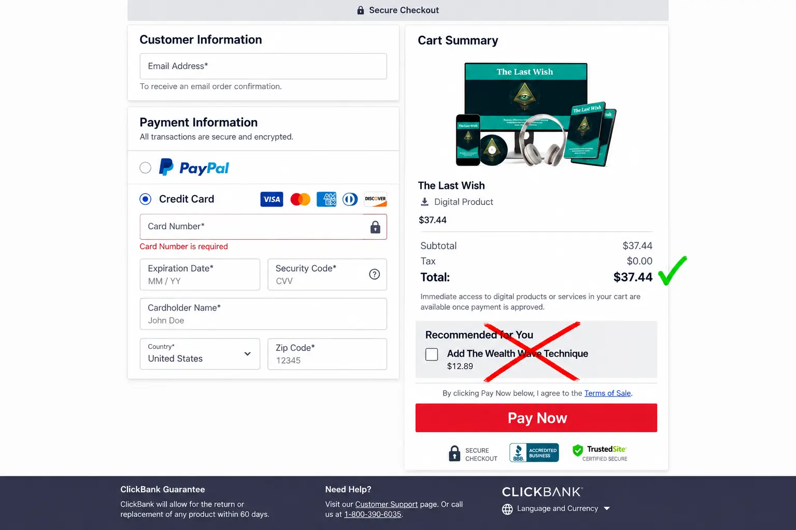

The Last Wish Review (2026): Does The 7-Second Ritual Work or Is It a Scam?
📌 TL;DR: The Brutal Truth
Is The Last Wish a scam? No, but you need to understand what you are actually buying. It will NOT magically drop cash into your lap just by listening to it for 7 seconds. It is a subconscious audio reprogramming tool designed to clear brain fog, reduce financial anxiety, and help you recognize wealth-building opportunities that a stressed brain misses. At $37.44, it's a solid mental-clarity tool—just don't buy the expensive upsells.
If you've been on social media lately, you've probably seen the viral videos talking about a bizarre "7-second manifestation ritual" that supposedly activates your pineal gland and attracts wealth.
The program behind these ads is called The Last Wish. The internet is highly divided—half the people call it a miracle, and the other half call it fake.
At True Choice Insider, we hate marketing fluff. We decided to investigate the actual digital audio files, the psychological mechanisms behind them, and the pricing structure to see exactly what you are paying for.
1. Exposing The "7-Second Magic" Myth
Let’s address the elephant in the room. The sales video implies that if you listen to this audio for just 7 seconds, the "universe" will start manifesting money for you.
That is a marketing hook. Do not take it literally.
No audio frequency can alter your bank balance directly. If you are buying this thinking you can listen to it once, sit on your couch, and win the lottery, save your money.
However, when you look past the exaggerated marketing, the core product itself is actually based on a very real, well-documented psychological concept: Neuro-Linguistic Programming (NLP) and frequency-based meditation.
2. The Reality: Subconscious Audio & The Pineal Gland
The Last Wish heavily references the "Pineal Gland." In modern science, a calcified pineal gland (often caused by poor modern diets, stress, and fluoride) is linked to brain fog, poor sleep, and decision fatigue.
When you are stressed about money, your brain stays in a high-alert "Beta" state. In this state, you are driven by fear, making it impossible to spot new business ideas, career opportunities, or wise investments.
The Last Wish uses specific sound frequencies designed to shift your brainwaves into a deep "Theta" state. It acts as an anchor to:
- Quiet the negative "money blocks" in your subconscious.
- Reduce severe financial anxiety.
- Allow your mind to focus clearly on wealth-generating actions rather than panic.
It doesn't magically create money; it creates the mindset required to build and attract money.
3. What Do You Actually Get for $37.44?
Because this is a 100% digital product, there is no physical CD or book mailed to you. Upon purchase, you get a secure download link.
📦 Inside The Digital Dashboard
| Item | Format | Purpose |
|---|---|---|
| The Last Wish Audio | Digital MP3/WAV | The core frequency track for daily listening. |
| Official Guide | PDF eBook | Instructions on how to maximize the listening routine. |
| Pineal Gland Plan | PDF Bonus | Dietary tips on reducing brain fog. |
| The Wealth Scripts | PDF Bonus | Written affirmations to rewrite money blocks. |
4. 🚨 The Checkout Upsell Warning
This is where our independent review comes in. We want to ensure you don't overspend.
Ignore The "One-Time Offers"
When you go to buy The Last Wish for its promotional price of $37.44, the checkout system may try to sell you additional audio tracks or "VIP access" for upwards of $100 to $300. You do NOT need these. The base $37.44 package includes the exact audio ritual and all the necessary bonuses. Simply click "No thanks" to any additional upsells until you reach your download area.

5. Final Verdict: Should You Buy It?
If you are struggling with a negative money mindset, chronic stress, or feel like you constantly sabotage your own financial success, The Last Wish is an excellent, affordable tool to help hit the reset button on your brain.
🛡️ The Zero-Risk Test Drive
Because the product is processed through ClickBank's secure platform, your purchase is protected by a strict refund policy (typically 60 to 365 days, depending on the current promotion).
This means you can download the audio, listen to it every morning for a month, and see if it shifts your mental clarity and financial luck. If you don't feel a difference, you just email their support team for a full refund—no questions asked.
Click Here To Access The Last Wish Digital Audio (Official Link) >>